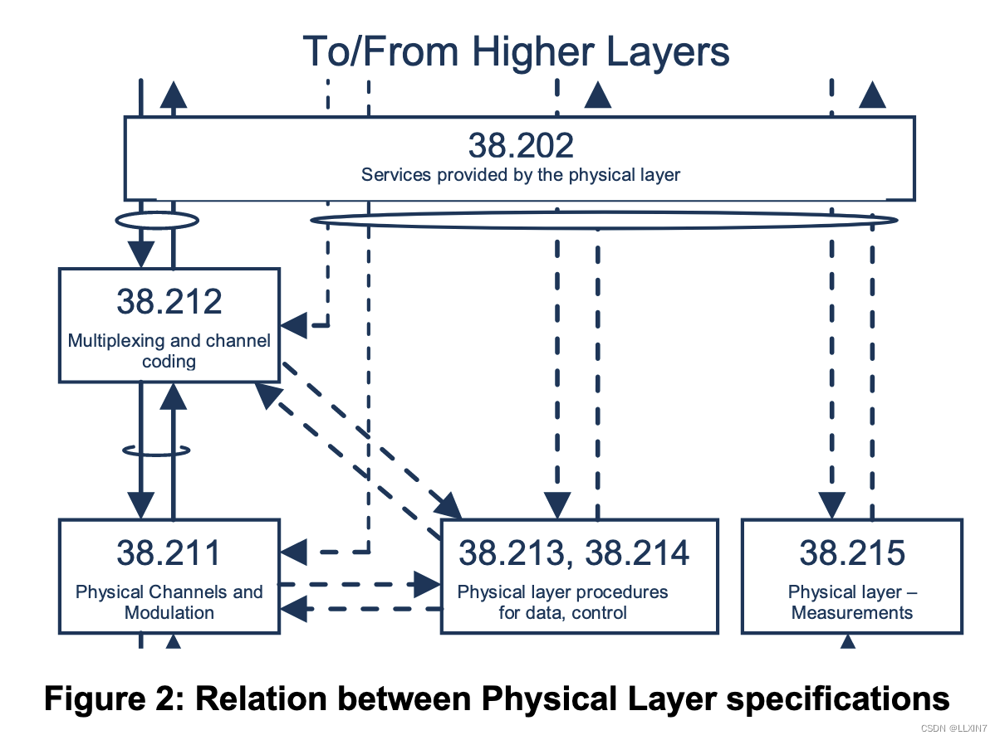
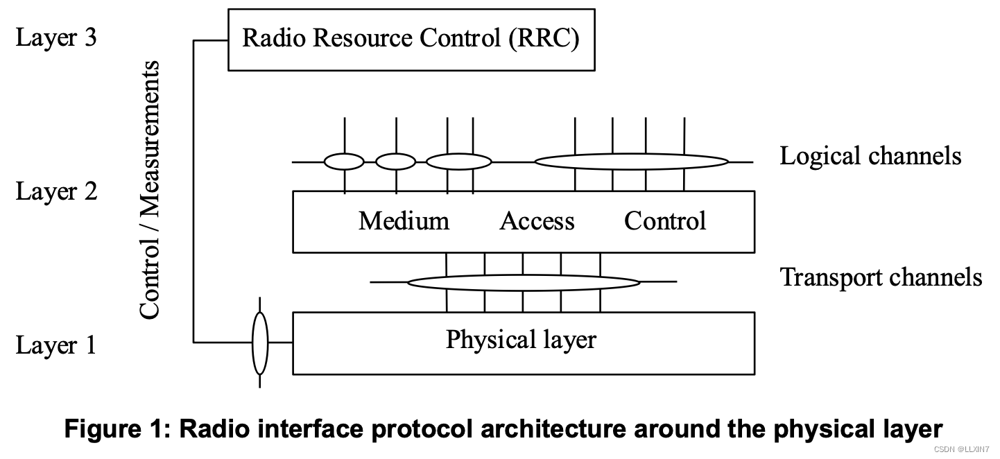

TS38.201是介绍性的标准，简单介绍了RAN的信道组成和PHY层承担的功能，下图是PHY层相关标准的关系。
结构
如图所示，不同层/子层之间的圆圈表示服务接入点(SAP)，其中L2包括MAC，RLC，PDCP和SDAP。PHY为MAC提供传输信道（信息如何通过无线电接口传输），MAC为RLC提供逻辑信道（所传输信息的类型），RLC为PDCP提供RLC信道，PDCP为上层提供无线承载，SDAP提供QoS Flow级别服务。

信道类型
The physical channels defined in the downlink are:- the Physical Downlink Shared Channel (PDSCH),
- the Physical Downlink Control Channel (PDCCH),
- the Physical Broadcast Channel (PBCH),
- the Physical Random Access Channel (PRACH),
- the Physical Uplink Shared Channel (PUSCH),
- the Physical Uplink Control Channel (PUCCH).
- the Physical Sidelink Broadcast Channel (PSBCH),
- the Physical Sidelink Control Channel (PSCCH),
- the Physical Sidelink Feedback Channel (PSFCH),
- the Physical Sidelink Shared Channel (PSSCH).
调制方式
The modulation schemes supported are- in the downlink, QPSK, 16QAM, 64QAM, 256QAM, and 1024QAM,
- in the uplink, QPSK, 16QAM, 64QAM and 256QAM for OFDM with a CP and π/2-BPSK, QPSK, 16QAM,64QAM and 256QAM for DFT-s-OFDM with a CP.
PHY层支持的过程
- Cell search
- Power control
- Uplink synchronisation and Uplink timing control
- Random access related procedures
- HARQ related procedures
- Beam management and CSI related procedures
- Sidelink related procedures
- Channel access procedures
物理层测量
Radio characteristics are measured by the UE and the network and reported to higher layers. These include, e.g.measurements for intra- and inter-frequency handover, inter RAT handover, timing measurements, and measurements for RRM.其他标准
TS 38.202: Physical layer services provided by the physical layer
- Services and functions of the physical layer;
- Model of physical layer of the UE;
- Parallel transmission of simultaneous physical channels and SRS;
- Measurements provided by the physical layer.
TS 38.211: Physical channels and modulation
- Definition of the uplink, downlink and sidelink physical channels;
- Frame structure and physical resources;
- Modulation mapping (BPSK, QPSK, etc);
- OFDM signal generation;
- Scrambling, modulation and upconversion;
- Layer mapping and precoding;
- Physical shared channel in uplink, downlink and sidelink;
- Reference signal in uplink, downlink and sidelink;
- Physical random access channel;
- Primary and secondary synchronization signals.
TS 38.212: Multiplexing and channel coding
- Channel coding schemes;
- Rate matching;
- Uplink transport channels and control information;
- Downlink transport channels and control information;
- Sidelink transport channels and control information.
TS 38.213: Physical layer procedures for control
- Synchronization procedures;
- Uplink power control;
- Random access procedure;
- UE procedure for reporting control information;
- UE procedure for receiving control information.
TS 38.214: Physical layer procedures for data
- Power control;
- Physical downlink shared channel related procedures;
- Physical uplink shared channel related procedure;
- Physical sidelink shared channel related procedure.
TS 38.215: Physical layer measurements
- Control of UE/NG-RAN measurements;
- Measurement capabilities for NR.
TS 37.213: Physical layer procedures for shared spectrum channel access
- Downlink channel access procedures;
- Uplink channel access procedures;
- Sidelink channel access procedures.
这是一个引用块的示例文本。